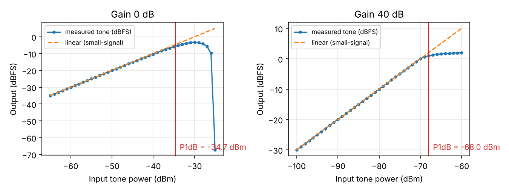
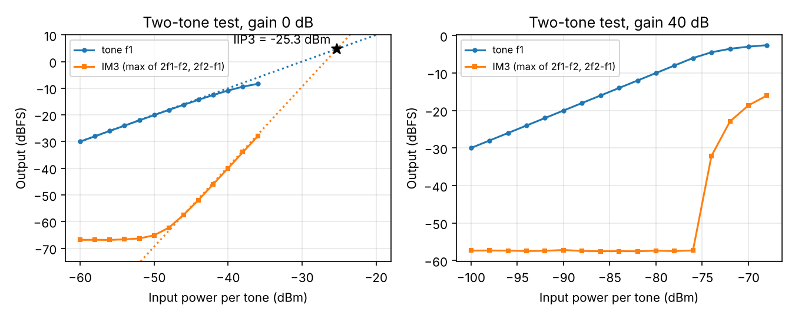
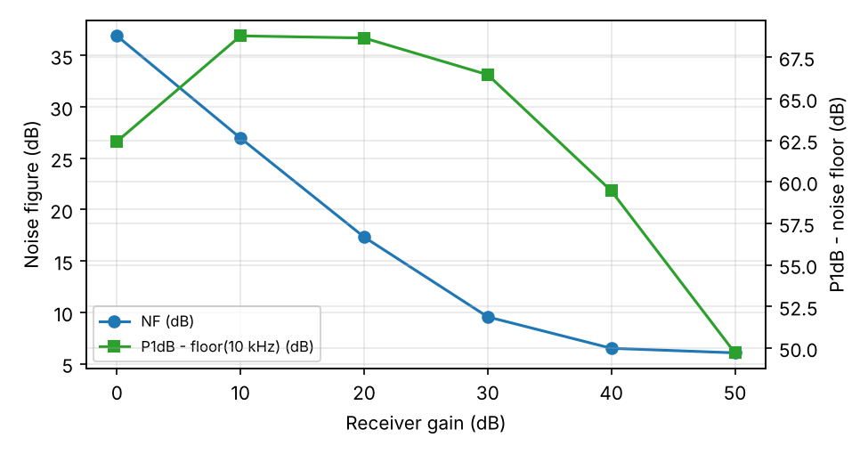
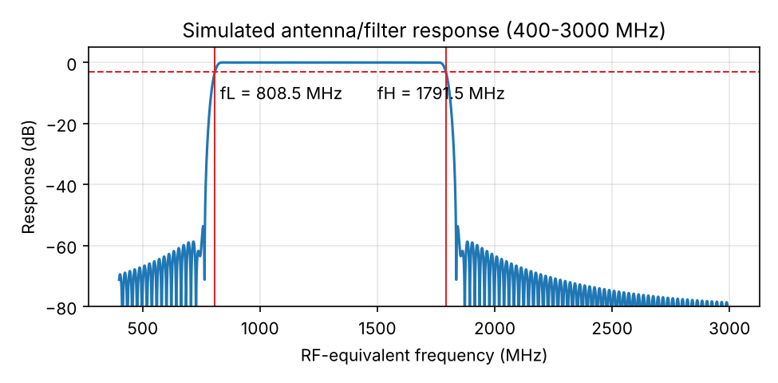

پیشگزارش آزمایش ۲: عدد نویز، تراکم و نقطهی تقاطع مرتبهی سوم
- prelab.pdfنسخهی کامل پیشگزارش با همهی محاسبهها
- prelab_tex.zipفایلهای LaTeX، شکلها و کدهای شبیهسازی
خلاصهی کارمان. اول منبعها را خواندیم و پرسشهای نظری را حل کردیم. بعد مدل گیرندهی فلوگراف شبیهسازی را در پایتون دوباره نوشتیم تا بتوانیم سریع و چند بار اجرایش کنیم، و با مثال دستورکار چک کردیم که درست کار میکند. با همین مدل عدد نویز، تراکم و آزمایش دوتنی را در چند بهره امتحان کردیم. در آخر برای گیرندهی خودمان پیشبینی نوشتیم که سر جلسه با اندازهگیری مقایسه کنیم. این صفحه خلاصه است؛ جزئیات کامل در پیدیاف است.
تکلیف ۱: خلاصهی منبع
عدد نویز چه چیزی را نشان میدهد؟
هر طبقهی گیرنده سیگنال را تقویت میکند، ولی یک مقدار نویز هم از خودش اضافه میکند. عدد نویز میگوید نسبت سیگنال به نویز بعد از گیرنده چقدر بدتر شده است (وقتی منبع در $T_0=290\,\text{K}$ باشد). همین را با دمای نویز $T_e=T_0(F-1)$ هم میشود گفت. کف نویز ورودی $-174+NF+10\log_{10}B$ است، پس هر دسیبل عدد نویز بیشتر، ضعیفترین سیگنال قابل دریافت را یک دسیبل بالا میبرد. در زنجیره هم طبق فریس، طبقهی اول از همه مهمتر است.
چرا روش Y-Factor توان مطلق لازم ندارد؟
توان نویز خروجی با دمای منبع رابطهی خطی دارد: $N=Gk(T_\text{in}+T_e)B$. اگر یک بار با منبع خاموش و یک بار روشن اندازه بگیریم، در نسبت این دو $G$ و $B$ ساده میشوند و $F=\text{ENR}/(Y-1)$ به دست میآید. پس واحد نسبی dBFS کافی است. شرطها: بهره ثابت بماند، گیرنده در حالت روشن متراکم نشود، و ENR با عدد نویز جور باشد.
نقطهی تقاطع مرتبهی سوم به چه دردی میخورد؟
دو سیگنال قوی در $f_1$ و $f_2$ سیگنالهای ناخواستهای در $2f_1-f_2$ و $2f_2-f_1$ میسازند که درست کنار سیگنال اصلی میافتند و با فیلتر حذف نمیشوند. با داشتن IIP3 سطح این محصولات برای هر ورودی حساب میشود: $P_\text{IM3}=3P_\text{in}-2\,\text{IIP3}$. البته این فقط برای مدل مرتبهی سوم درست است؛ در SDR احتمالاً بریدگی مبدل زودتر اتفاق میافتد.
تکلیف ۲: پرسشهای نظری
پرسش ۱: عدد نویز و فریس
| NF (dB) | F | Te (K) |
|---|---|---|
| 1 | 1.259 | 75.1 |
| 3 | 1.995 | 288.6 |
| 6 | 3.981 | 864.5 |
| 10 | 10.0 | 2610 |
برای زنجیره، اول دسیبلها را خطی کردیم و بعد فریس را نوشتیم:
اگر فیلتر را قبل از تقویتکننده بگذاریم:
جابهجا کردن فیلتر عدد نویز را حدود ۲٫۲ دسیبل بدتر کرد، چون تلفات قبل از اولین تقویتکننده تقریباً همانقدر به عدد نویز اضافه میشود.
پرسش ۲: به دست آوردن رابطهی Y-Factor
اگر دمای حالت خاموش $T_c$ باشد: $F=\dfrac{\text{ENR}-Y\,(T_c/T_0-1)}{Y-1}$. با تضعیفگر بین منبع و گیرنده، حالت خاموش همان $T_0$ میماند ولی اختلاف حالت روشن $L$ برابر کم میشود:
$\text{ENR}_\text{eff,dB}=\text{ENR}_\text{dB}-A_\text{dB}$؛ یعنی تضعیفگر دقیقاً به اندازهی خودش از ENR کم میکند.
پرسش ۳: حساسیت به خطای اندازهگیری
با ENR=۱۵: برای $NF=6$، مقدار $Y$ حدود ۹٫۵ دسیبل است و ۰٫۱ دسیبل خطا در $Y$ فقط حدود ۰٫۱۱ دسیبل خطا در عدد نویز میدهد. ولی برای $NF=25$، $Y$ فقط ۰٫۴۱ دسیبل است و همان خطا عدد نویز را از ۰٫۹۹− تا ۱٫۲۵+ دسیبل جابهجا میکند؛ حدود ده برابر بدتر!
نتیجه: ENR باید حداقل ۵ تا ۱۰ دسیبل از عدد نویز مورد انتظار بیشتر باشد، ولی نه آنقدر که گیرنده متراکم شود.
پرسش ۴: غیرخطیبودن
با مدل $y=a_1x+a_3x^3$ و دو تن همدامنه به اینها رسیدیم:
این رابطه فقط برای مدل مرتبهی سوم ساده درست است، و IIP3 یک نقطهی امتدادی است؛ پس باید از نقطههایی حساب شود که شیب واقعاً ۳ است.
پرسش ۵: محدودهی دینامیکی بدون اسپور
با $NF=8$ و $\text{IIP3}=-10$: در ۲۰۰ کیلوهرتز کف نویز ۱۱۳− دسیبلمیلیوات و SFDR برابر ۶۸٫۷ دسیبل است؛ در ۱۰ کیلوهرتز کف ۱۲۶− و SFDR برابر ۷۷٫۳ دسیبل. یعنی با پهنای باند بیشتر، SFDR کم میشود.
پرسش ۶: بهره در گیرندهی SDR
با ۱۰ دسیبل بهرهی بیشتر، نویز مبدل (برگردانده به ورودی) ۱۰ دسیبل پایین میآید که خوب است، ولی مقیاس کامل و نقطهی تراکم هم ۱۰ دسیبل پایین میآیند که بد است. از یک جایی به بعد بهرهی بیشتر عدد نویز را بهتر نمیکند ولی تراکم را بدتر میکند؛ در شبیهسازی هم دیدیم از بهرهی ۴۰ به ۵۰ عدد نویز فقط از ۶٫۵ به ۶٫۱ دسیبل رسید.
تکلیف ۳: محاسبهی طراحی
| کمیت | مقدار | چرا |
|---|---|---|
| ENR برای عدد نویز حدود ۷ و ۳۰ | ۱۵ و ۳۵ دسیبل | $Y$ حدود ۸٫۶ و ۶٫۲ دسیبل میشود؛ با ENR=۱۵ برای عدد نویز ۳۰، $Y$ فقط ۰٫۱۴ دسیبل میشد. |
| تضعیف بعد از منبع | NF≈۷: منبع ۱۵ بدون تضعیف یا منبع ۳۵ با ۲۰ دسیبل؛ NF≈۳۰: منبع ۳۵ بدون تضعیف | $\text{ENR}_\text{eff}=\text{ENR}-A$. توان حالت روشن حتی با ۳۵ حدود ۶۶− دسیبلمیلیوات است، خیلی کمتر از حد ایمنی. |
| زمان میانگینگیری (نوسان کمتر از ۰٫۰۵ دسیبل) | حداقل ۱۹ میلیثانیه؛ ما ۰٫۱ ثانیه صبر میکنیم | $1/\sqrt{B\tau}\le0.0116\Rightarrow B\tau\ge7.5\times10^3$ |
| جاروب تکتن | از ۳۵ دسیبل زیر تراکم تا ۳ دسیبل بعد از آن؛ گام ۲، نزدیک تراکم ۱ دسیبل؛ هیچوقت بالای ۱۰− دسیبلمیلیوات | شروع باید حداقل ۲۰ دسیبل بالای کف نویز باشد. |
| دو تن و محصولات | ۳۰۰+ و ۴۰۰+ کیلوهرتز؛ محصولات در ۲۰۰ و ۵۰۰ | همه از مرکز و لبهها دورند و فاصلهی ۱۰۰ خیلی بیشتر از نوار ۱۰ کیلوهرتز است. |
| توان هر تن (محصول ۱۰ دسیبل بالای کف) | $P_\text{in}\ge(N_\text{10k}+10+2\,\text{IIP3})/3$؛ در مدل حدود ۴۶− | در شبیهسازی هم چک کردیم. |
تکلیف ۴: شبیهسازی با مدل گیرنده
مدل فلوگراف lab02_sim.grc را بلوک به بلوک در پایتون دوباره ساختیم تا جاروبها را خودکار اجرا کنیم.
چک کردن مدل: در بهرهی ۴۰ و ENR=۱۵ مدل ما $Y=9.07$ و $NF=6.50$ دسیبل داد؛ مثال ۲ دستورکار ۹٫۰۶ و ۶٫۵ نوشته است.
عدد نویز
| بهره | ENR | Noff (dBFS) | Non (dBFS) | Y (dB) | NF (dB) |
|---|---|---|---|---|---|
| 40 | 15 | −41.44 | −32.39 | 9.05 | 6.52 |
| 10 | 15 | −51.00 | −50.72 | 0.28 | ۲۶٫۸ (قابل اعتماد نیست) |
| 10 | 35 | −51.00 | −42.30 | 8.70 | 26.9 |
در بهرهی ۱۰ با ENR=۱۵ مقدار $Y$ خیلی کم بود، برای همین ENR=۳۵ را انتخاب کردیم.
تراکم یک دسیبل

آزمایش دوتنی

در بهرهی ۴۰ اول تعجب کردیم، ولی بعد دلیلش را پیدا کردیم: دامنهی اوج دو تن همدامنه دو برابر هر تن است، پس مبدل وقتی بریده میشود که هر تن به حدود ۶− dBFS برسد. به نظر ما در این بهره IIP3 معنی روشنی ندارد.
عدد نویز و تراکم در بهرههای مختلف
| بهره | ENR | Y (dB) | NF (dB) | P1dB (dBm) | کف ۱۰ کیلوهرتز | فاصله (dB) |
|---|---|---|---|---|---|---|
| 0 | 45 | 8.71 | 36.9 | −34.7 | −97.1 | 62.4 |
| 10 | 35 | 8.67 | 27.0 | −38.3 | −107.0 | 68.8 |
| 20 | 35 | 17.74 | 17.3 | −48.0 | −116.7 | 68.7 |
| 30 | 15 | 6.53 | 9.6 | −58.0 | −124.4 | 66.5 |
| 40 | 15 | 9.07 | 6.5 | −68.0 | −127.5 | 59.5 |
| 50 | 15 | 9.46 | 6.1 | −78.2 | −127.9 | 49.7 |

بیشترین فاصله بین بهرهی ۱۰ و ۲۰ است (بهرهی ۱۵ را هم امتحان کردیم: ۶۸٫۹ دسیبل). با بهرهی کمتر نویز مبدل عدد نویز را بالا میبرد و با بهرهی بیشتر، تراکم پایین میآید.
تکلیف ۵: پاسخ فرکانسی آنتن
بازهی کاری اعلامشده در صفحهی محصول
| بازه | حد پایین (MHz) | حد بالا (MHz) |
|---|---|---|
| ۱ | 2400 | 2500 |
شبیهسازی
فایل شبیهسازی آنتن را خواندیم و پاسخ را با همان مشخصات ولی با گام ریزتر (۰٫۱ مگاهرتز) خودمان حساب کردیم، چون با گام پیشفرض ۲۰ مگاهرتز نقطهی سهدسیبلی بین دو نقطه میافتاد.
| کمیت | مقدار (MHz) |
|---|---|
| فرکانس قطع پایین، fL | 808.5 |
| فرکانس قطع بالا، fH | 1791.5 |
| پهنای باند سهدسیبلی | 983.0 |

دو نکته که به چشممان خورد: (۱) لبههای ۸۰۰ و ۱۸۰۰ مگاهرتز در نمودار برنامه در واقع نقطههای ۶− دسیبلاند، نه ۳−. (۲) شبیهسازی بازهی ۸۰۰ تا ۱۸۰۰ را فرض کرده، ولی صفحهی محصول ۲٫۴ تا ۲٫۵ گیگاهرتز نوشته، در حالی که اسم آنتن GSM است. سر جلسه با اندازهگیری میبینیم کدام درست است.
تکلیف ۶: پیشبینی برای گیرندهی خودمان
| ردیف | کمیت | پیشبینی |
|---|---|---|
| ۱ | عدد نویز در بیشترین بهره | حدود ۵ دسیبل (تراشه ۲ تا ۳، بهاضافهی تلفات قطعههای قبلش) |
| ۲ | تغییر عدد نویز با ۲۰ دسیبل بهرهی کمتر | حدود ۱۰+ دسیبل |
| ۳ | تغییر P1dB با ۱۰ دسیبل بهرهی کمتر | حدود ۱۰+ دسیبل |
| ۴ | Y با ENR=۱۵ و NF=۷ | ۸٫۶ دسیبل |
| ۵ | تضعیفگر ۱۰ دسیبل قبل از گیرنده | ۱۰+ دسیبل ($F=LF_\text{rx}$) |
| ۶ | محصول مرتبهی سوم با ۲+ دسیبل برای هر تن | ۶+ دسیبل (اگر مبدل بریده نشود) |
| ۷ | IIP3 − P1dB ≈ ۹٫۶؟ | در بهرههای بالا نه، چون بریدگی مبدل حد را تعیین میکند |
| ۸ | بهرهی اختصاصی تیم | بعد از اعلام در جلسه |
تکلیف ۷: ریسکها و راه جلوگیری
- آسیب به ورودی گیرنده: قبل از هر اتصال توان ورودی را حساب میکنیم و هیچوقت از ۱۰− دسیبلمیلیوات بالاتر نمیرویم؛ موقع بستن کابل فرستنده خاموش است؛ جاروب از کمترین سطح شروع میشود؛ تضعیفگر ۳۰ دسیبل همیشه سر جایش است.
- خواندن اشتباه Y: بهرهی دستی را قبل از هر اندازهگیری چک میکنیم، ENR را طبق جدول طراحی میگیریم و حداقل ۰٫۱ ثانیه صبر میکنیم. با اضافه کردن تضعیف هم تست میکنیم که عدد نویز عوض نشود.
- اشتباه گرفتن محصول فرستنده با محصول گیرنده: با ۳ دسیبل تضعیف اضافه، محصول گیرنده ۹ دسیبل پایین میآید ولی محصول فرستنده فقط ۳ دسیبل.
کارهای تیم و استفاده از هوش مصنوعی
کارهایی که خودمان انجام دادیم:
- دستورکار و منبعها را خواندیم و ترتیب انجام تکلیفها را مشخص کردیم.
- مشخصات آنتن را از صفحهی محصول پیدا کردیم و در جدول تکلیف ۵ نوشتیم.
- همهی محاسبهها و نتیجههای گزارش را قدم به قدم مرور کردیم و درستی مدل شبیهسازی را با مثال ۲ دستورکار چک کردیم.
- گزارش و صفحهی آن را روی سایت تیم منتشر کردیم.
استفاده از هوش مصنوعی: از دستیار Claude بهعنوان ابزار کمکی برای نوشتن کد شبیهسازی و پیشنویس پاسخها و تحلیلها استفاده کردیم.